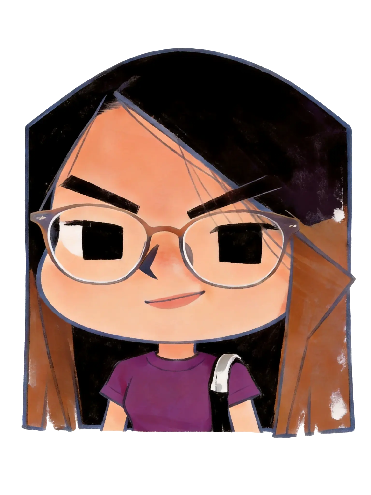

教育
- 北京 · 清华美院Tsinghua University · Product Design
- 柏林 · 2026 上半年Exchange in Berlin · 2026
在清华美院，我度过了三年的产品设计学习时光。
2026 年上半年，我前往柏林交换，在不同的文化与设计语境中参与海外项目。
从北京到柏林，我开始习惯用更开放的视角理解产品、人与环境之间的关系。
产品与交互设计
Product & Interaction Designer
清华大学工业设计系产品设计专业，2027 届。关注用户体验与 AI 设计趋势，习惯从真实的用户缺口出发，把想法做成可运行的原型。Base 北京，可长期线下。
Product Design, Dept. of Industrial Design, Tsinghua University — Class of 2027. Focused on user experience and emerging AI design. I work from real user gaps toward working prototypes. Based in Beijing, open to long-term on-site.
点开一张贴纸，发现一个侧面。
点击空白处收起 · Esc 关闭

在清华美院，我度过了三年的产品设计学习时光。
2026 年上半年，我前往柏林交换，在不同的文化与设计语境中参与海外项目。
从北京到柏林，我开始习惯用更开放的视角理解产品、人与环境之间的关系。
从产品、交互到研究，我喜欢在不同尺度之间切换。
我做过柏林锐舞文化的数字存档，也参与过支付宝的出游产品项目。题目可以完全不同，但我享受进入一个陌生领域、理解它，再用设计为它注入新的活力。
我更习惯把工具当作思考和表达的延伸，而不只是执行软件。
对我来说，设计不只是解决一个问题，也是在重新组织人与技术、环境和记忆之间的关系。
我关注真实的使用场景，也喜欢那些容易被忽略的小情绪。
不在电脑前的时候，大概率在运动。

把一次旅程压缩成一枚可交互的"时环"，而非又一个相册。
Turning a trip into an interactive "time-ring" — not just another photo album.
角色：UX / 交互 · 系统设计 · Solo
让看不见的挥拍动作被看见、被感知——技术隐形于球场。
Making invisible swings visible and felt — technology dissolved into the court.
角色：交互 · 硬件 · Solo


让 AI 有情感而非诡异——把宠物的存在感温柔地留下。
Making AI feel emotional, not uncanny — keeping a pet's presence, gently.
角色：AI 产品 · 情感化设计 · 团队 3 人